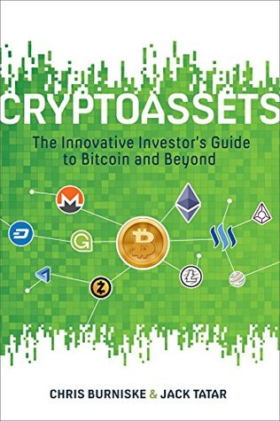

Cryptoassets: The Innovative Investor's Guide to Bitcoin and Beyond
Chris Burniske
Rating 3/5
I picked up this book because there are way too many keywords thrown around about cryptocurrencies and blockchain and you never know what you don’t know. Far from a comprehensive guide to “bitcoin and beyond”, this book could be summarized as “Bitcoin is great. Yields are great. You gotta invest”. While the initial few chapters go into explaining the technology and history of blockchain (Satoshi’s white paper on bitcoin, Vitalik Buterin’s work, Ethereum blockchain reversion to create Ethereum Classic, proof of stake/work), many of the latter chapters are far too repetitive. The authors compare the growth in value of native crypto assets vis-a-vis FAANG stocks. Problem is, most financial wisdom is retrospective. One cannot possibly argue that bitcoin will keep doing well because it had been doing well so far because it’ll only stop doing well until it stops doing well. For the record, I’m long on crypto but the authors’ arguments sound fragile to me. They do not discuss the issues with existing blockchains such the current cost of transaction, threshold of transactions per second etc. For bitcoin to become a practical alternative to the dollar, it needs to support at least as many transactions as VISA/Mastercard is doing at the moment per second. We are not there yet. There is also no discussion on the environmental cost of mining.
TLDR: Read chapter 2, skip the rest of the book. Peace.